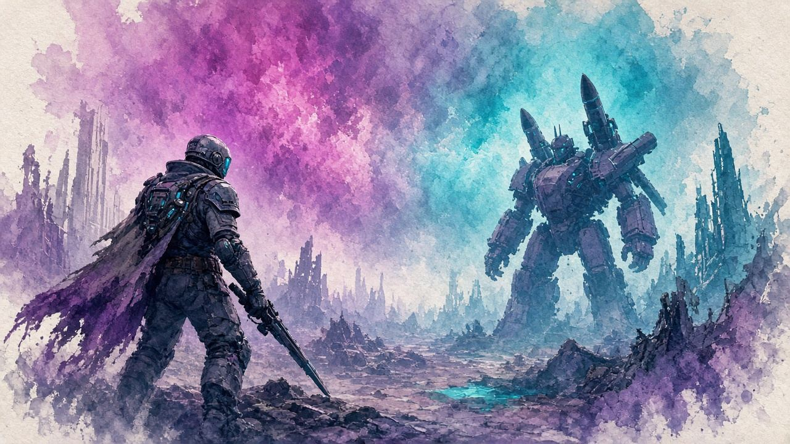

STEP 01 · COVER
入多門窗建築或堅固掩體。唔好喺開闊地硬剛。留意 aggro／視線距離同盲區，再開始 peek。
先入屋／掩體，再開槍
走位片 67–182s：GeS5mNekPgw @ 67s →
短片待嵌

飛行重甲 ARC · 推進器弱點 · 黃→紅激光彈幕 · Heavy／Hornet Driver
固有掉落 火箭兵驅動器（Rocketeer Driver）；常 farm Dam Testing Annex／Ruby Residences。
入掩體 → 集火推進器 → 見黃紅激光即斷視線 → 墜地後補槍至燒毀。短片已鎖秒；完整片喺 #videos。
入多門窗建築或堅固掩體。唔好喺開闊地硬剛。留意 aggro／視線距離同盲區，再開始 peek。
先入屋／掩體，再開槍
走位片 67–182s：GeS5mNekPgw @ 67s →
主打四個推進器；毀兩個即墜。優先集火同側／正面一對（較穩）。機體装甲傷極低——唔好狂打機身。
眼部／紅核唔當唯一弱點；以推進器為準
神話澄清 335–450s：0YJZ9HsUeE4 @ 335s →
見黃激光對齊變紅＝導彈即將發射。即斷視線／翻滾入屋；濺射可穿過門口，要退入屋內。
黃→紅即縮；關門防濺射
dodge 183–324s：GeS5mNekPgw @ 183s →
墜地後繼續補槍至燒毀。補丁後落地唔一定秒殺——打殘餘推進器／機體。可 peek-and-shoot：每次 1–2 發即縮。
墜地≠即死；補到燒毀先算完
反打 341–494s：GeS5mNekPgw @ 341s →
優先高 ARC Armor Penetration 嘅重彈槍；輕彈穿甲差。武器對照片見右側卡。
FireSpark81 拆神話：Anvil 穿甲優於 Renegade；發數唔等於效率。預算用 Ferro＋重彈；高效用 Anvil／Bettina／Hullcracker。
優先高穿甲重彈，唔好跟榜亂換輕穿甲槍
武器段 182–334s：0YJZ9HsUeE4 @ 182s →
| 用途 | 常見推薦 |
|---|---|
| 預算主槍 | Ferro I＋重彈（約 40–50 發） |
| 高效主槍 | Anvil、Bettina、Hullcracker |
| 控場／墜地 | Hornet Driver、Showstopper |
| 爆發 | Wolfpack（清附近黃蜂／虎頭蜂先，免鎖錯） |
| 騎乘／貼雷 | Snap Hook＋Snap Blast；Showstopper 落地後爬上 |
現 meta 主推 Hornet Driver（成本低）；Showstopper 短暫落地；Wolfpack 幾乎秒殺但貴。道具對照片 451–708s。
Showstopper vs Hornet Driver 實測對照；更新後 Wolfpack 製作成本升高（要 Rocketeer Driver）。日常 farm 用 Hornet／Ferro 較划算。
有錢趕時間用 Wolfpack；日常用 Hornet
道具段 451–708s：0YJZ9HsUeE4 @ 451s →
以 Dam／Spaceport／Blue Gate／Buried City 為準。唔寫未核實嘅 Stella Montis 肯定句。
安全位／Farm 驅動器段。固有掉落 Rocketeer Driver；可唔打淨 farm（視任務）。
Dam Testing Annex／Ruby Residences 較常提到
Farm 709s→：0YJZ9HsUeE4 @ 709s →
Testing Annex／Ruby Residences 一帶較常提到。
捷徑同短示範鎖秒卡。完整長片見 #videos。
TellIKONation · 更新後推 Hornet 電兩推進器
整段示範 0–78s；前方拋上機體
YouTube 0–78s：FdF2AOH5Kqg →
TellEvil Geniuses · 約 20–30 m 前方拋上
瞄推進器上方；短示範 0–99s
YouTube 0–99s：nFkI-0ymUD4 →
TellMrAtomicDuck · 章節 Rocketeer
peek-and-shoot 常規槍戰參考
YouTube 206–328s：206s →
TellMarkPoint · 提 Wolfpack／Hullcracker
整段 0–28s
YouTube 0–28s：jesOSWWnTMc →
TellPAID2BFAMOUS · 快速擊殺向
整段 0–32s
YouTube 0–32s：8zJtCHqDuPc →
YouTube nocookie 全嵌；B 站只外連（無公開精確 Rocketeer 專章秒數）。短卡時間窗喺 #flow／#moves。
0YJZ9HsUeE4 · 弱點／武器／道具／Farm（鎖秒卡已拆）
FdF2AOH5Kqg · 全長約 78s
nFkI-0ymUD4 · 約 20–30 m 拋投 · 全長約 99s
GeS5mNekPgw · aggro／dodge／反打（鎖秒卡已拆）
jesOSWWnTMc · 短片打爆兩推進器
多源有出入；頁內「建議」欄跟核實稿。版本會改數值，以遊戲內補丁同主 wiki 為準。
| 議題 | 說法 A | 說法 B | 建議 |
|---|---|---|---|
| 兩個推進器要唔要同側 | 必須同側兩推進器先墜 | 摧毀任意兩個即墜 | 實戰優先集火同一側／正面一對，較穩 |
| 發光紅色核心 | 胸口／下方核心係弱點 | 主 wiki 無列；部分標未核實 | 以推進器為主；核心當加分，唔好單靠 |
| 墜地是否即死 | 早期高空墜落可秒殺 | 補丁後碰撞傷降低，常要補槍 | 墜地後繼續打至燒毀 |
| Wolfpack 是否最佳 | 舊 meta 一雷近秒殺 | 更新後成本高；影片改推 Hornet | 趕時間用 Wolfpack；日常用 Hornet／Ferro |
| 最佳武器 | Anvil／Ferro／Hullcracker／Bettina | 部分榜列 Renegade／Osprey | 優先高穿甲重彈；Renegade 穿甲較弱 |
| Stella Montis 有無刷新 | 多數圖有，除 Stella Montis | 其他追蹤器未統一 | 以 Dam／Spaceport／Blue Gate／Buried City 為準 |
招式唔清楚、想加邊個 Boss、有錯漏——丢句說話。留言經 Netlify Forms 直達網主信箱／後台，唔再只係本機保存。
你嘅意見已送出俾網主。想再講可以繼續填。